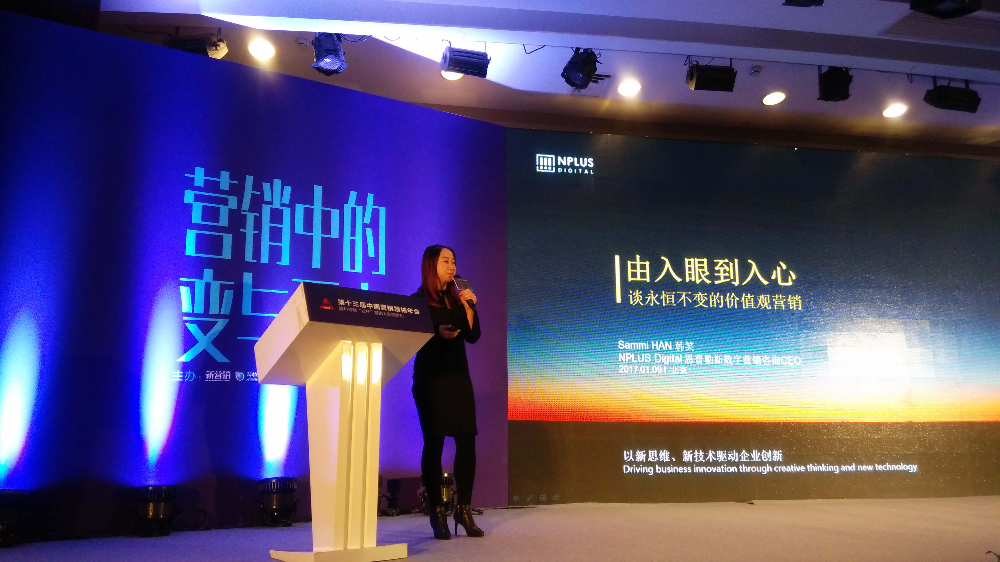
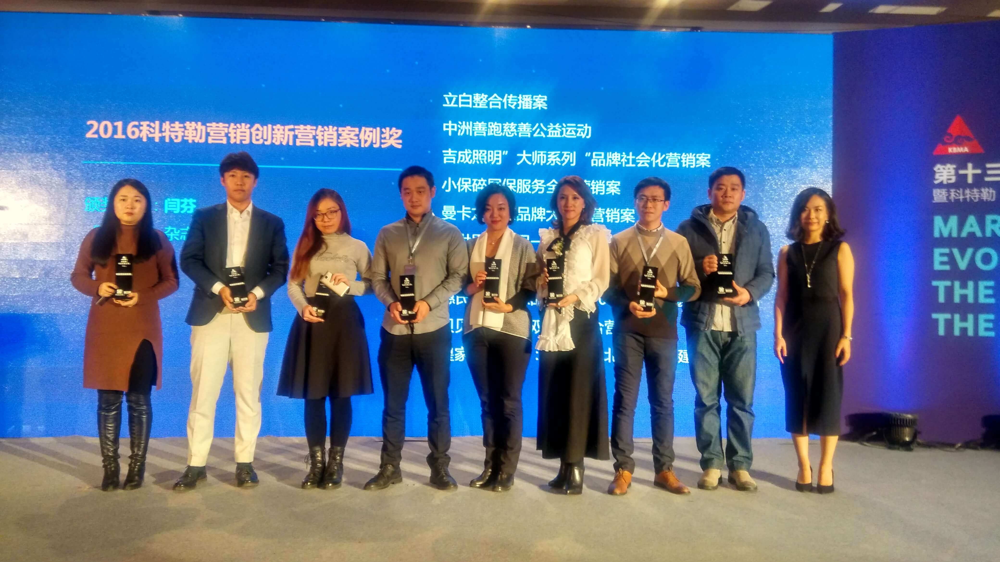

TIME
2016Y 11M 01D
营销世界风云万变，信息技术的快速更迭更加剧了营销领域的进化，在新技术、新渠道、新内容和创意形式不断发展变化的移动互联网时代，如何不断精进技艺、积累智慧，以不变应万变是营销人所面临的挑战。2017年1月9日，第十三届中国营销领袖年会暨科特勒“标杆”营销大奖颁奖礼在北京召开，恩普勒斯数字营销咨询CEO韩笑女士受邀出席大会，并发表《由入眼到入心——永恒不变的价值观营销》主题演讲，与参会嘉宾们共同探讨数字化营销时代的进化新趋势，分享自己的营销理念与心得。
在本次分享中，韩笑女士提到，以人为本、直达人心是以不变应万变的法则。对营销人来说，不变的是“得民心者得天下”。 在这个信息爆炸的世界，如何让产品和品牌被用户记住是一个巨大的挑战。“商业在脑，艺术在心”，通过营销建立基于心灵相通的信任关联，促进商业与艺术的完美融合，能创造出在消费市场环境下更高层次的感情与精力知足。韩笑女士表示，我们已经完成从物质需求导向到心理需求导向的转变，在这个以人为核心的社交商业时代，品牌要帮助消费者最终获得自我实现，而不是自我标榜。“尽最大可能来满意消费者最高层次的被尊重、被认同的需求，从而到达自我实现”。

NPLUS CEO Sammi作为论坛演讲嘉宾
对于品牌如何给产品赋予文化情感上的价值，韩笑女士给出了自己的看法：在消费者最需要的时候，以TA最喜欢的方式出现并适度沟通，提供最适合TA的产品及服务。情感赋能与社会化用户关系管理是当前营销最重要的两件事。未来商业将无限趋近内容化、知识化、社交化。品牌需要实现从平衡经济到范围经济、从大众传播到精准营销的转变，寻求新的平衡点
在演讲之后的颁奖环节，NPLUS惊喜收获大会颁发的两项大奖。恩普勒斯为冠群驰骋打造的“《致敬经典，传递新生》双十一旧物分享公益平台”以及为惠氏打造的“惠氏妈妈俱乐部及妈妈1000天生态圈”均荣获2016年科特勒“标杆”营销大奖创新营销案例奖。

NPLUS CKO 陈露代表公司领取奖杯
“《致敬经典，传递新生》双十一旧物分享公益平台”用微博发声微信造势，以经典歌手和歌曲引发网友好奇心，制造悬念吸引关注度，呼吁网友交换分享闲置旧物，最大程度上减少浪费实现社会资源物尽其用。平台从旧物分享出发，着眼公益之心，落实社会责任。该平台上线一周即帮助冠群驰骋吸引了超过10万平台访问量和3万新用户，赢得了客户的好评。
“惠氏妈妈俱乐部及妈妈1000天生态圈的打造”瞄准母婴奶粉消费主力群体90后妈妈，深刻洞察理解妈妈们的行为习惯及市场需求，通过持续的、有体系的、与消费者沟通的方式，将潜在消费者影响转化成为高忠诚消费者，建立全新的营销商业模式。截止2016年12月，惠氏妈妈俱乐部微信公众号达到600万精准注册会员。惠氏妈妈俱乐部在全国100多个城市建立近3000个微信群，累计招募80万精准妈妈，平均群活跃度超过45%。
同时斩获两项大奖既是对NPLUS在营销领域做出的努力与成绩的肯定，更是一种鞭策。营销行业在不断“进化”，营销人也需要随时提升自己，为客户更好地服务。在移动互联大势之下，NPLUS愿意与更多行业精英交流分享经验，与更多品牌客户及合作伙伴通力合作，开拓数字营销及数字商业的未来。NPLUS希望在未来能够充分发挥“以新思维、新技术驱动企业创新”的企业理念，依托自身资源和专业服务经验，为品牌搭建基于文化赋能、价值观营销的平台，帮助品牌建立与消费群体的深度关系与情感联结，提升品牌影响力、提高品牌价值。